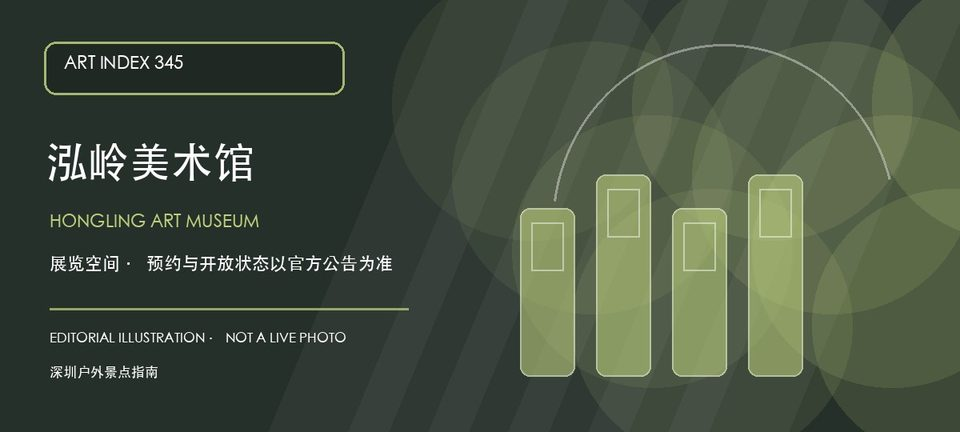

适合谁
适合关注小型展览和城市艺术空间的人；首次到访应预留楼宇登记和电梯通行时间。

SHENZHEN GUIDE · 345
福田区红岭中路银荔大厦九楼901 · 美术馆 / 艺术空间
泓岭美术馆位于红岭中路银荔大厦九楼901，属于需要通过楼宇地址和开放公告确认入口的城市艺术空间。它适合与福田中心区的公共文化路线组合，但不应因为位于写字楼就假定全天候开放。官方名录已核实馆名和地址，具体展览、预约、门禁和摄影规则仍需出发前确认。
WHY GO
适合关注小型展览和城市艺术空间的人；首次到访应预留楼宇登记和电梯通行时间。
先联系场馆确认九楼901、开放日和访客登记，再从当期主展开始；遵守写字楼门禁，不进入办公区域。
公共交通先到红岭中路银荔大厦片区，再按泓岭美术馆公开入口导航；出发前核对楼宇门禁、电梯和开放时段。
自驾优先使用银荔大厦或周边正规停车场；车位、收费和社会车辆准入以大厦现场公告为准，不在红岭中路和消防通道临停。
全年可安排，室内空间适合高温或降雨日；展期和楼宇运营安排比季节更影响体验。
NEARBY IDEAS
 授权实景图
授权实景图
荔枝公园位于红岭老城区，荔枝林、湖面与老城区公共生活贴得很近，邓小平画像广场周边的城市记忆使它比普通社区公园更具时代切片感。
 编辑配图·非现场实景
编辑配图·非现场实景
深圳玺宝楼青瓷博物馆位于宝安南路，专题聚焦青瓷釉色、窑口与器形变化，适合把颜色之外的胎质、开片和烧造技术纳入观看。
 授权实景图
授权实景图
深圳博物馆古代艺术馆位于同心路，以中国古代艺术专题、馆藏器物与不定期特展为核心，建筑和展陈气质都区别于市民中心的历史民俗馆。